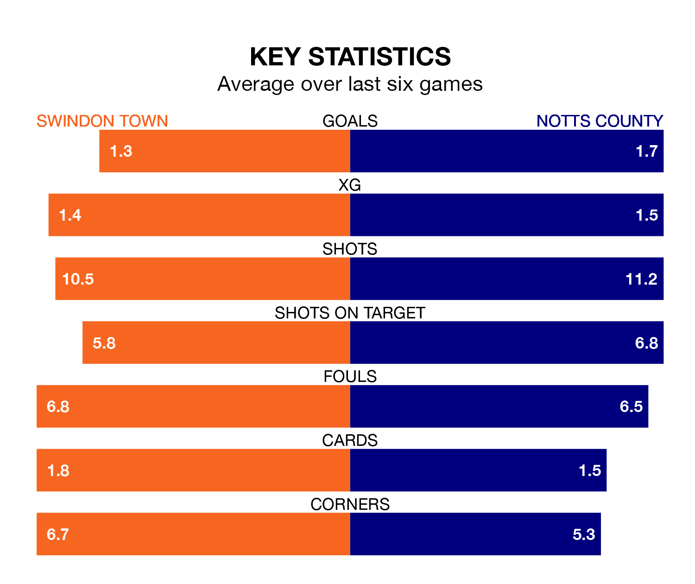

Swindon Town welcome Notts County to the County Ground on Friday looking to pick up points to end their three-game losing streak.
Swindon's struggles have left them with five points from their last six EFL League Two matches, while their opponents have earned four from a possible 18.
With 76 goals in 39 games so far this season, County are the league's second-highest scorers with 1.9 goals per game. But they are conceding more than average too, letting in 74 goals at a rate of 1.9 per game.
Swindon are also above average scorers, with 1.7 goals per game, compared to a league average of 1.5. They have conceded 1.8 goals per game.
In Macaulay Langstaff, the away team have the league's sharpest shooter so far this season. He has notched 24 goals in 39 appearances.
His goal rate of one every 143 minutes is quicker than that of Daniel Kemp, Town's top scorer with a goal every 191 minutes, and a total of 17 goals in 40 games.
In the last 10 years, Swindon and County have played each other on eight occasions. Swindon won five of them and County three.
On average, the Robins scored 1.6 goals and County 1.0 in those matches.
Their last meeting was on October 3, when County won 3-1 at home.
The Robins are 20th in the table after 39 games, of which they have won 11 and drawn 11, earning 44 points.
County are six places ahead of the hosts in 14th, with 15 wins and six draws putting them on 51 points.
Swindon's last match was on March 16, a 2-1 loss against Doncaster Rovers, with Paul Glatzel getting the goal for the Robins.
County lost 2-1 against Salford City last time out, on Saturday, with Daniel Crowley on the scoresheet.
Updated: 12:39 (UTC), 26/03/24